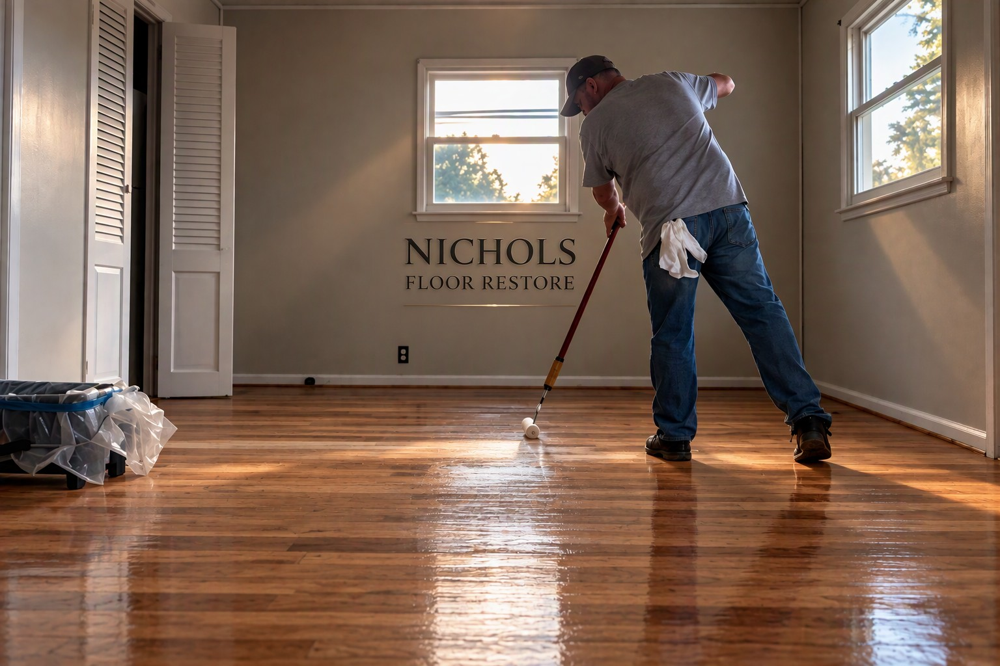
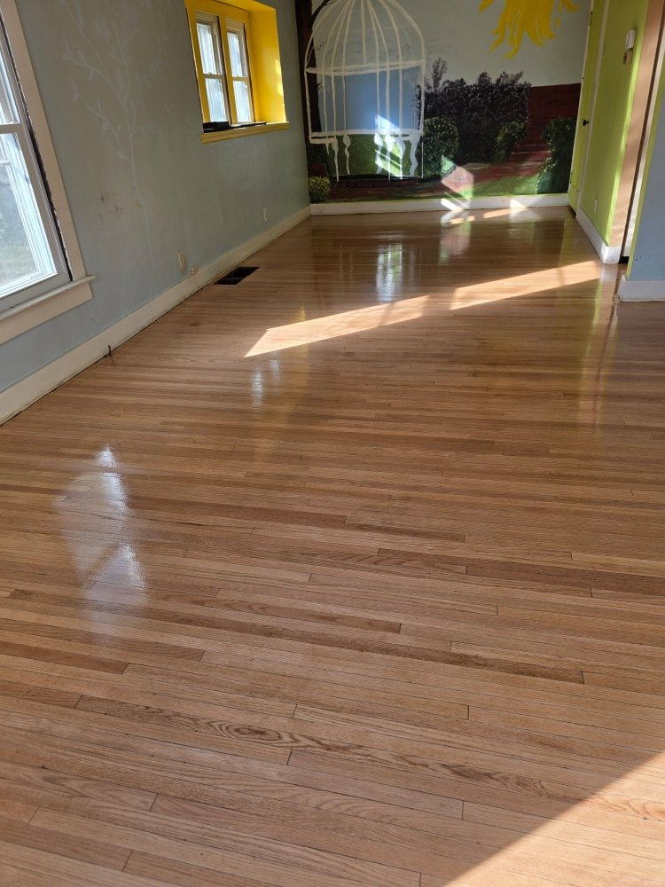
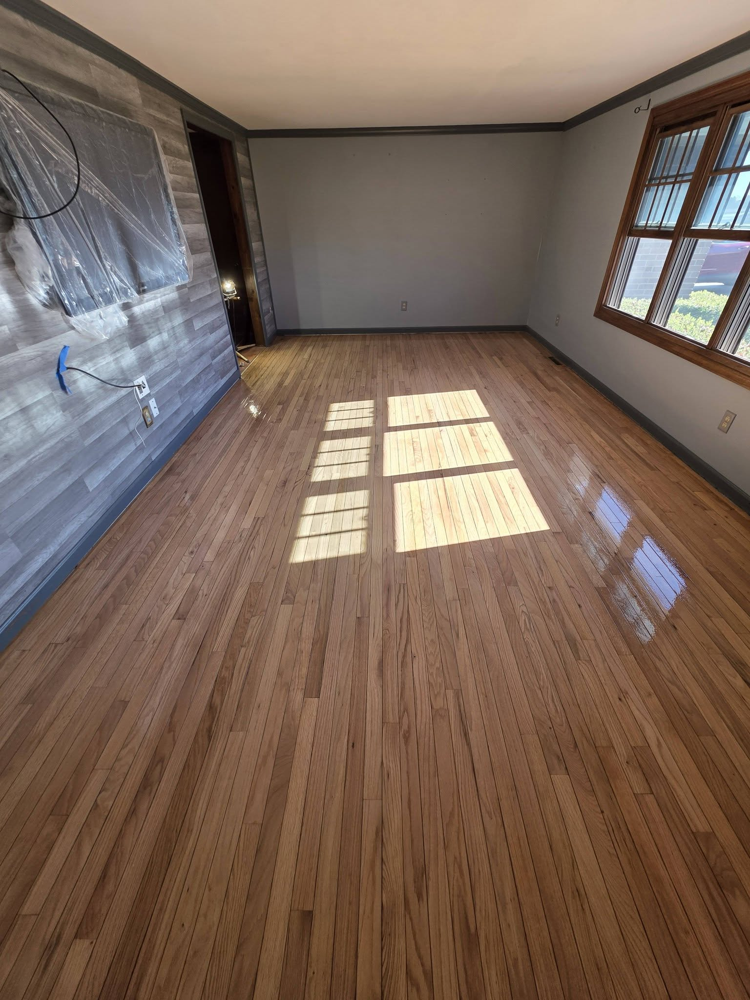
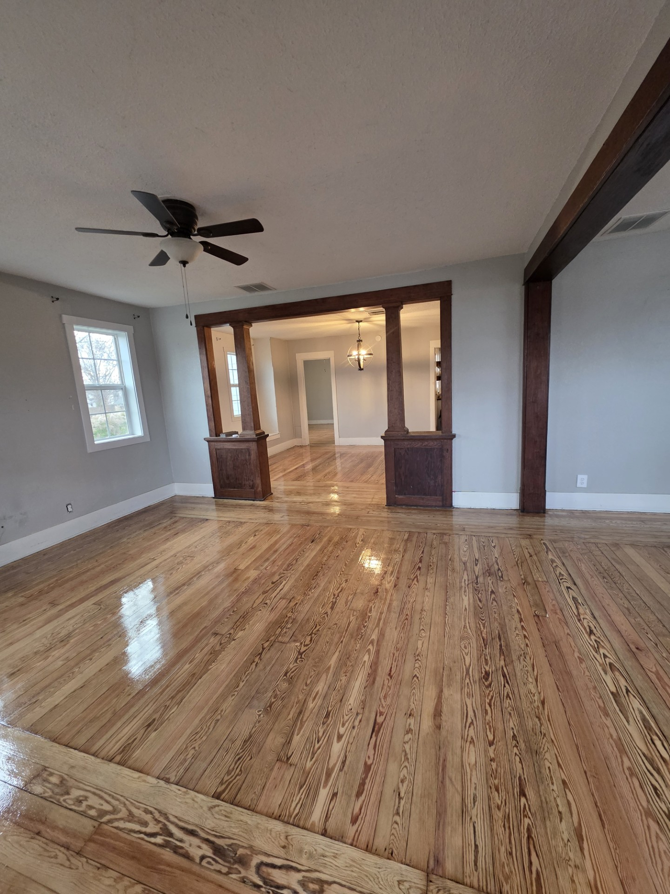
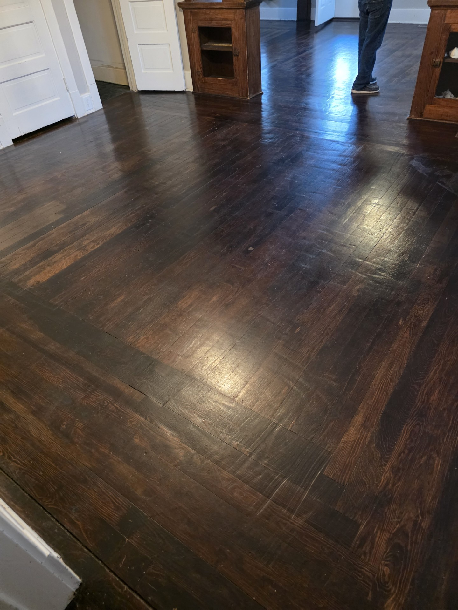
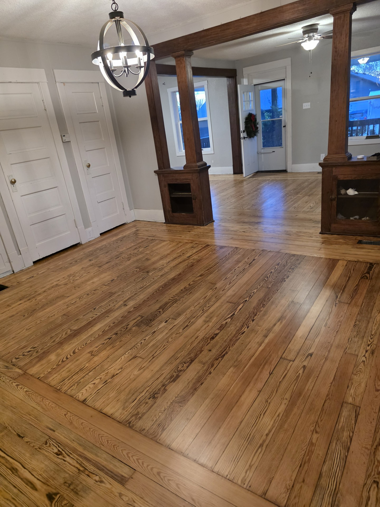

Nichols Floor Restore, where we make your floors come back to life.

Here is a few examples of some floors i have refinished.

This red oak floor was refinished to a natural finish with premium water base sealer and polyurethane.

This floor was also finished natural water base finish

With this project i added a hardener in the final coat for a little more protection to the pine floors.
See the difference a refinish to your floors can make.

As you can see these floors have many issues, there are stop marks from the drum sander not being properly operated. You can also see the stain is very blochy and dark, it was not applied properly and excess stain was not wiped off after being applied.

I was able to get the stop marks out of the floor, but as you can see after years of being under carpets and more years of wear and tear there are still some dark spots. Overall these floors are now almost looking brand new and protected with premium polyurethane.